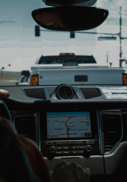

МЕДИА
Ультра-мобильный творческий синдикат,
состоящий из независимых креативных
наёмников и технических ниндзя. Нас
объединяет опыт работы в медиа сфере более
10 лет и полное понимание того, как делать
крутые фильмы, игры, подкасты и все, что
касается звука
ЗВУКА
Музыка
Ninja, forced to fight in the thickets and premises,
preferred short swords. A traditional sword rarely
exceeded 60 cm. A few meters of rope were tied to a
scabbard: the sword could become a hanging bench or step.
AR, VR, MR
Ninja, forced to fight in the thickets and premises,
preferred short swords. A traditional sword rarely
exceeded 60 cm. A few meters of rope were tied to a
scabbard: the sword could become a hanging bench or step.
Имплементация
Ninja, forced to fight in the thickets and premises,
preferred short swords. A traditional sword rarely
exceeded 60 cm. A few meters of rope were tied to a
scabbard: the sword could become a hanging bench or step.
Трейлеры
Ninja, forced to fight in the thickets and premises,
preferred short swords. A traditional sword rarely
exceeded 60 cm. A few meters of rope were tied to a
scabbard: the sword could become a hanging bench or step.
Аудио брендирование
Ninja, forced to fight in the thickets and premises,
preferred short swords. A traditional sword rarely
exceeded 60 cm. A few meters of rope were tied to a
scabbard: the sword could become a hanging bench or step.
VoiceOver
Ninja, forced to fight in the thickets and premises,
preferred short swords. A traditional sword rarely
exceeded 60 cm. A few meters of rope were tied to a
scabbard: the sword could become a hanging bench or step.
Саунд-Дизайн
Ninja, forced to fight in the thickets and premises,
preferred short swords. A traditional sword rarely
exceeded 60 cm. A few meters of rope were tied to a
scabbard: the sword could become a hanging bench or step.
Уникальные решения
Ninja, forced to fight in the thickets and premises,
preferred short swords. A traditional sword rarely
exceeded 60 cm. A few meters of rope were tied to a
scabbard: the sword could become a hanging bench or step.
ВИДЕО
Ультра-мобильный творческий синдикат,
пытающийся придумать текст про видео и
написать какой-то бессмысленной рыбы,
которая будет нормально смотреться
ПОДКАСТОВ
Ninja, forced to fight in the thickets and premises,
preferred short swords. A traditional sword rarely
exceeded 60 cm. A few meters of rope were tied to a
scabbard: the sword could become a hanging bench or step.
Presumably, the art of owning these weapons appeared
either in the XIV or in the XVII century. Perhaps the
use of ninja sickle was associated with the need to
camouflage weapons under everyday agricultural tools.
ПРОЕКТОВ
РОСТЕЛЕКОМ

Оригинальная музыка и
саунд-дизайн для серии
рекламных роликов
новых цифровых
продуктов Ростелекома
СБЕРБАНК
ПАБЛИЧНЫЕ
ИГРЫ
АДРЕНАЛИН
РАШ
ЙОТА ЛАБ
ДРУГОЙ МИР
ВАС
Пишите нам на почту.
Можете зайти в наш
СаундКлауд или Инстаграм